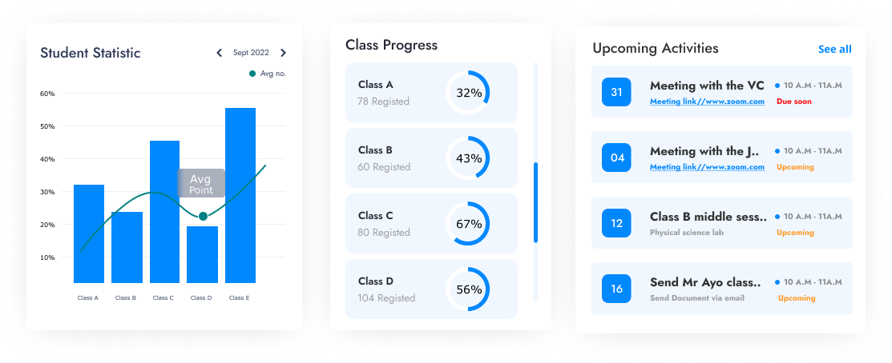
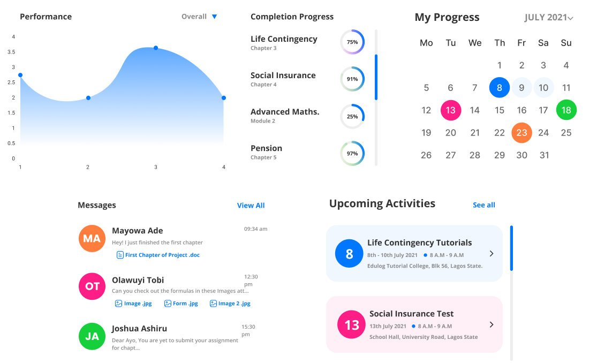

Visualiza el progreso académico de manera clara e inmediata, sin esperar evaluaciones finales.
Detecta riesgos de bajo rendimiento y actúa antes de que sea demasiado tarde.
Recibe recomendaciones personalizadas para optimizar el estudio y mejorar resultados.
Supervisa el progreso de tus estudiantes, identifica riesgos y toma decisiones pedagógicas basadas en datos en tiempo real.

MentorEdu permite a los docentes analizar el desempeño académico de sus estudiantes de forma clara y eficiente, facilitando la detección temprana de dificultades y mejorando la toma de decisiones.
ESTUDIANTE
Con una interfaz intuitiva, MentorEdu ayuda a los estudiantes a visualizar su progreso, identificar debilidades y tomar acciones concretas para mejorar su rendimiento.